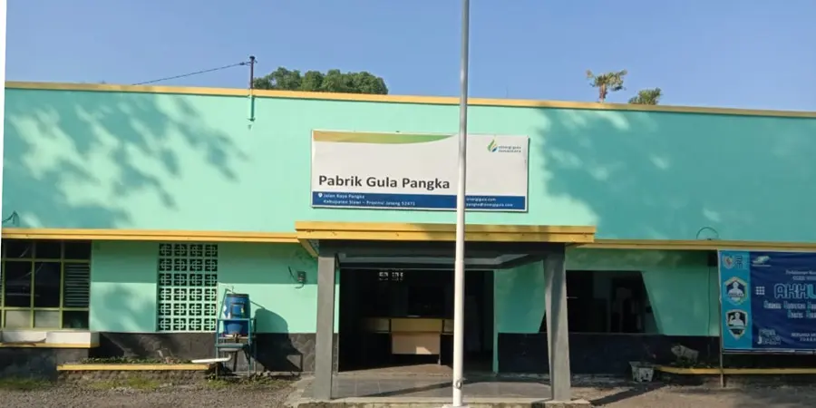

PT Sinergi Gula Nusantara
Mengenal lebih dekat profil, sejarah, dan perkembangan unit operasional PT Sinergi Gula Nusantara dalam memajukan industri gula nasional.
Pabrik Gula Pangka

Pabrik Gula Pangka
Pabrik Gula ini didirikan pada zaman pemerintahan Belanda, pemilik pabrik adalah NV-Mijtot Exploitatie Dert Suiker Fabrieken, dengan pengelola pabrik NV Koys dan Cusier yang pada saat itu berkedudukan di Surakarta. Sejak tahun 1832, perusahaan ini sudah berproduksi dan pada tahun 1951 disempurnakan keberadaannya.
Dengan adanya UU No. 86/1958 dan PP No. 1991/1959 tentang pengambil alihan (nasionalisasi) perkebunan eks-Belanda, PG Pangka resmi menjadi Badan Usaha Milik Negara (BUMN). Perusahaan berubah status menjadi Pusat Perkebunan Negara Baru (PPN BARU) yang mengelola 22 Pabrik Gula (termasuk PG Pangka) dan 1 Pabrik Spiritus dan Alkohol (PSA). Tahun 1961 PPN BARU dirubah menjadi PPN Kesatuan Jateng II, Pabrik Gula berubah status menjadi Perkebunan Gula Negara (PPN-GULA) di tahun 1963. Tahun 1968 PPN dibagi terdiri dari PNP I s/d PNP XVI, PG Pangka termasuk PNP XV, tahun 1973 Pengalihan bentuk PNP XV menjadi Perusahaan Perseroan (Persero), tahun 1981 Pembubaran PNP XV dengan nama PT. Perkebunan XV-XVI, tahun 1994 Regrouping PTP di Jateng yang terdiri dari PTP XV-XVI, XVIII, XIX dan XXI-XXII sebagai pengelola, kuasa direksi merupakan kepanjangan tangan pengelola. Dan PG Pangka dibawah kuasa Direksi PTP XV-XVI di Surakarta.
Peleburan PTP XV-XVI dan PTP XVIII menjadi PT Perkebunan Nusantara IX Perusahaan yang berstatus Badan Usaha Milik Negara (BUMN) ini didirikan pada tanggal 11 Maret 1996 berdasarkan Peraturan Pemerintah No. 14 Tahun 1996, pada tanggal 14 Februari 1996. PG Pangka merupakan salah satu unit kerja PT Perkebunan Nusantara IX (Persero) Divisi Tanaman Semusim, dengan kantor Direksi yang berkedudukan di Surakarta dan pada Tanggal 10 Oktober 2022 PG Pangka telah melaksanakan Spin Off dan bernaung dibawah PT Sinergi Gula Nusantara / Sugar Co Sub Holding Komoditas Gula.
Pabrik Gula Pangka terakhir aktif beroperasi Giling pada tahun 2019, selanjutnya hingga saat ini sudah tidak beroperasi. Pabrik Gula Pangka berlokasi di Jl. Raya Pangkah – Slawi, Desa Pangkah, Kec. Pangkah, Kab. Tegal 52471, Jawa Tengah.